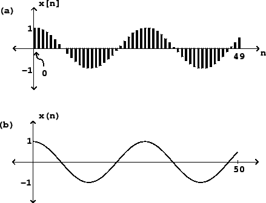
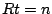
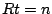

Electronic music is usually made using a computer, by synthesizing or processing digital audio signals. These are sequences of numbers,
Figure 1.1 (part a) shows a sinusoid graphically.
The
horizontal axis shows successive values of  and the vertical axis shows the
corresponding values of
and the vertical axis shows the
corresponding values of  . The graph is drawn in such a way as to
emphasize the sampled nature of the signal. Alternatively, we could draw it
more simply as a continuous curve (part b). The upper drawing is the most
faithful representation of the (digital audio) sinusoid, whereas the lower
one can be considered an idealization of it.
. The graph is drawn in such a way as to
emphasize the sampled nature of the signal. Alternatively, we could draw it
more simply as a continuous curve (part b). The upper drawing is the most
faithful representation of the (digital audio) sinusoid, whereas the lower
one can be considered an idealization of it.
|  |
Sinusoids play a key role in audio processing because, if you shift one of them left or right by any number of samples, you get another one. This makes it easy to calculate the effect of all sorts of operations on sinusoids. Our ears use this same special property to help us parse incoming sounds, which is why sinusoids, and combinations of sinusoids, can be used to achieve many musical effects.
Digital audio signals do not have any intrinsic relationship with time, but
to listen to them we must choose a
sample rate, usually given the variable name  , which is the number
of samples that fit into a second. The time
, which is the number
of samples that fit into a second. The time  is related to the sample number
is related to the sample number
 by
, or
by
, or  . A sinusoidal signal with angular frequency
. A sinusoidal signal with angular frequency  has a real-time frequency equal to
has a real-time frequency equal to
A real-world audio signal's amplitude might be expressed as a time-varying voltage or air pressure, but the samples of a digital audio signal are unitless numbers. We'll casually assume here that there is ample numerical accuracy so that we can ignore round-off errors, and that the numerical format is unlimited in range, so that samples may take any value we wish. However, most digital audio hardware works only over a fixed range of input and output values, most often between -1 and 1. Modern digital audio processing software usually uses a floating-point representation for signals. This allows us to use whatever units are most convenient for any given task, as long as the final audio output is within the hardware's range [Mat69, pp. 4-10].